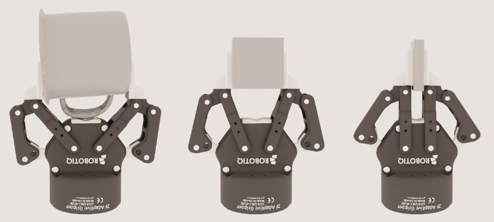
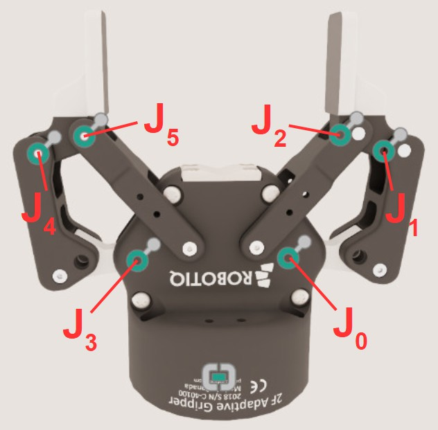

Joint Parameter Tuning Example: Robotiq 2F-85#
A worked example of tuning articulation joint drives (spring/damper model) for a robotic gripper, the Robotiq 2F-85. It applies the concepts from the Articulation Stability guide to a concrete asset. The estimates here are deliberately crude — they establish a value range, not precise numbers. Gravity is taken as 10 m/s^2 throughout.
Units. PhysX uses radians for angular quantities; USD uses degrees. For angular stiffness/damping, one USD unit equals
180/piPhysX units. This example uses PhysX units unless stated otherwise; map accordingly when authoring USD.
Test Scenes#
Tune with simple scenes: the gripper plus one object to grasp. Start with the object’s gravity disabled, close the gripper, and watch for instability or penetration; then enable gravity and check the grip holds; then apply a lifting force. Cover several cases:
Primitive objects (box/cylinder) at different thicknesses so the gripper grips at different opening angles.
A collision-challenging thin-walled shape (cup, bowl).
The geometrically hardest object your application requires.

The Gripper#
Six revolute joints model the gripper’s degrees of freedom. Only joint J0 has a drive; the other five are mimic joints of J0 (gearing 1 or -1, offset 0), driven indirectly. J0 ranges 0 deg (fully open) to 47 deg (fully closed).

Maximum Drive Force and Joint Velocity#
Set limits first so the simulation stays in the range expected of the real gripper (from the mechanical specification, or from experiments).
Maximum drive force#
The gripper holds a 5 kg box at friction coefficient 0.3, requiring about
[ \frac{mass \cdot gravity}{0.3} = \frac{5 \cdot 10}{0.3} \approx 166\ \text{N} ]
so 83 N per finger. Torque at the joint from the ~0.04 m lever arm:
[ \tau = F \cdot r = 83 \cdot 0.04 \approx 3.3\ \text{Nm} ]
Round up to 4 Nm per joint. Since J0 drives all six joints (itself plus five mimic joints, gearing 1), set J0’s max drive force to
[ J_0\ maxDriveForce = 6 \cdot 4 = 24\ \text{Nm} ]
Maximum joint velocity#
Max finger speed is 0.15 m/s; each finger travels 0.0425 m to close, so
[ t = \frac{0.0425}{0.15} \approx 0.28\ \text{s} ]
Over J0’s 47 deg range:
[ J_0\ maxJointVelocity = \frac{47}{0.28} \approx 168\ \text{deg/s} ]
Generally do not set max joint velocity on the mimic joints (leave them at default). With non-compliant mimic joints, a too-low limit can cause instability; the mimic joints already follow J0’s velocity by design.
Drive Stiffness and Damping#
A spring/damper drive produces F = s*dx - d*dv (stiffness s, damping d,
position error dx, velocity error dv). Check the choice against natural
frequency and damping ratio (angular joint, inertia i):
[ nf = \sqrt{s / i} \qquad dr = \frac{d}{2\sqrt{s \cdot i}} ]
Use the most conservative joint — the one on the lightest link. For J0, the lighter link’s inertia about the rotation axis (through the parallel-axis theorem with mass 0.0127 kg, offset 0.01 m) is about
[ 2.1\text{e-}6 + 0.0127 \cdot (0.01)^2 \approx 3.4\text{e-}6\ \text{kg m}^2 ]
The asset’s original stiffness of ~5700 gives nf ~ 4.0e4 rad/s, far above the
250 Hz simulation frequency (even counting 64 TGS position iterations as full
steps, ~1.6e4). Such a mismatch is unstable.
Instead of matching nf to the sim frequency, derive stiffness from the required
force at the smallest target delta. If max drive force should be reached by a 5
deg (~0.087 rad) delta at J0:
[ s = \frac{maxDriveForce}{0.087} = \frac{24}{0.087} \approx 275\ \text{kg m}^2/\text{s}^2 ]
which gives nf ~ 9.0e3 rad/s — still large, but far better than 5700’s value,
and worth testing. Then derive damping from a damping ratio (1.0 = critical, a
good starting point):
[ d = dr \cdot 2\sqrt{s \cdot i} = 1.0 \cdot 2\sqrt{275 \cdot 3.4\text{e-}6} \approx 0.06\ \text{kg m}^2/\text{s} ]
Implicit spring caveat#
PhysX uses an implicit spring formulation, which prevents explosive forces from a too-large timestep but behaves unintuitively far from the natural frequency: past a point, increasing stiffness reduces the applied force, and increasing damping applies almost no damping. Ignoring damping, the force is roughly
[ F = \frac{s \cdot dx}{dt^2 \cdot nf^2 + 1} ]
so the force matches the explicit spring only when dt^2 * nf^2 is small — again,
keep the natural frequency near the simulation frequency.
Armature#
Armature assigns inertia (or mass, for linear DOFs) to a joint — modeling a motor
rotor and gearbox — and lowers the drive’s natural frequency (raising effective
inertia). For example, an armature of 5.0e-3 kg m^2 on J0 drops nf from ~9.0e3
to about
[ \sqrt{275 / 5.0\text{e-}3} \approx 234\ \text{rad/s} ]
which could work even at 60 Hz (with 64 TGS position iterations). Derive it from
a motor datasheet as reflected inertia armature = i_m * G^2 (rotor inertia
i_m, gear ratio G). Large relative armature changes the physical model, so
verify the motor spec and gear ratio justify it.
Mimic Joint Compliance#
Mimic joints can be hard constraints (large corrective forces) or compliant (spring/damper that allows some divergence). Start with non-compliant mimic joints and add compliance only when competing hard constraints cannot be resolved without yielding; sometimes increasing armature avoids the need. Compliance is set through natural frequency and damping ratio, not stiffness and damping — do not copy drive stiffness/damping into the compliance parameters.
Verification and Fine-Tuning#
On the simple scenes, verify that: the simulated open-to-close time roughly matches the spec; the gripper holds the maximum rated load under gravity across finger states; there is no significant penetration (check collision meshes, not just visuals — use OmniPVD); and there is no significant jitter. Then fine-tune: can stiffness or max drive force be lowered while still holding the load? Recompute related parameters when you change one (re-derive damping when you change stiffness). If instability persists despite spec-based values, increase position iterations, reduce the timestep, or add/increase armature. Get the gripper right on simple scenes before simulating a full robot.
Further reading: